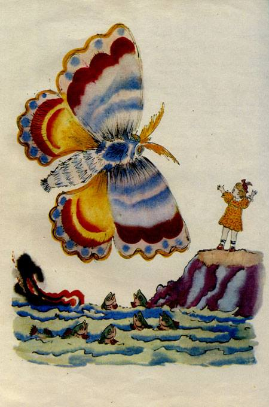

Tuesday, January the 28th, 2014
back to: title, date or indexes
One la-la-la morning, Tiny Enid was limping along the cliffs at the edge of the Big Frightening Sea when, across the sky, zooming directly at her, came a gigantic colourful bewinged flying insect of unknown provenance. Most infants would have screeched in terror and cried for Ma or Pa to rescue them, but of course the plucky fascist tot was not most infants. She raised her arms, as if in terror, to pull the wool over the huge airborne being's eyes, if it actually had any, and screech she did, but it was a screech not of fright but of blood-curdling menace. It was so terrific a screech that the enormous brightly-coloured mothish type of thing was immediately deafened, playing havoc with its complicated navigational head integuments, and it plummeted forthwith into the broiling waters where, unable to swim, it drowned.
Tiny Enid let fall her arms and patted the pocket wherein she carried her tiny toy Mannlicher-Carcano sniper's rifle which, in spite of being tiny, and a toy, was a devastatingly effective firearm.
“I am glad I did not have to use my trusty sniper's rifle to slaughter that curious wing-flapping monster,” she thought, “For it remains fully loaded and I can put the bullets to better use, should I happen later this morning to come upon malefactors and ne'er-do-wells roaming the cliffs.”
As indeed she did, but that is another story for another, more gruesome, time.

Illustration by Vladimir Konashevich, 1923
Hooting Yard on the Air, January the 30th, 2014 : “Little Dagobert” (starts around 27:20)